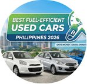

These figures are reported estimates, ranges, and global shares. Because fully driverless cars have yet to travel on roads, AV research largely extrapolates from current behavior and models (University of California, Davis, National Center for Sustainable Transportation [NCST], n.d.).
| Metric | Reported range | What it means |
|---|---|---|
| Hardware energy load | 3–20% increase in vehicle energy use and GHG emissions | Extra power for onboard sensors, AI processors, and data transmission drains batteries faster (Earth.Org, 2022). |
| Travel rebound effect | 20–50% more vehicle miles traveled; up to nearly 60% in one study | Easier, less stressful riding and empty repositioning trips can raise total miles and congestion (Earth.Org, 2022; Yucel, 2025). |
| Clean electricity (global) | 38% share of world electricity in 2021 | Renewable sources supplied this share, so an EV’s footprint depends on the local grid (Earth.Org, 2022). |
| Shared electric AV climate gains | 87–94% lower per-mile GHG vs. conventional vehicles | Modeled for shared autonomous electric taxis in the US; it requires a low-carbon grid (Greenblatt & Saxena, 2015, as cited in Yucel, 2025). |
| Eco-driving efficiency | 15–20% lower fuel use | Smooth automated acceleration and braking reduce waste in stop-and-go traffic (Earth.Org, 2022). |
Philippine electrified vehicle sales, 2026.

Rising oil prices from international conflict contributed to a 10.2% drop in overall Philippine auto sales in the first seven months of 2026 (Zapanta, 2026).
Electrified sales reached 38,286 units from January to July 2026, more than double the 16,195 units in 2025 (Zapanta, 2026).
In July 2026, electrified sales rose 161.8% year over year (7,086 vs. 2,707 units) and captured 29.5% of sales (Manila Standard, 2026; Zapanta, 2026).
Connected vehicles driving closely together can cut energy use by 3% up to 25%, depending on the vehicles and spacing (Earth.Org, 2022).
Owners of partially automated cars drove nearly 5,000 more miles a year than owners of conventional cars (Earth.Org, 2022).
Shared AVs could cut parking demand by 40–90% (Litman, 2020, as cited in Yucel, 2025).
Unoccupied AVs could make up 10–20% of urban traffic in high-adoption scenarios (Zhang et al., 2015, as cited in Yucel, 2025).
Responses to these trade-offs are covered on the Solutions page.